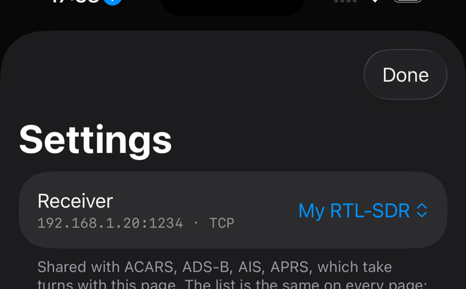
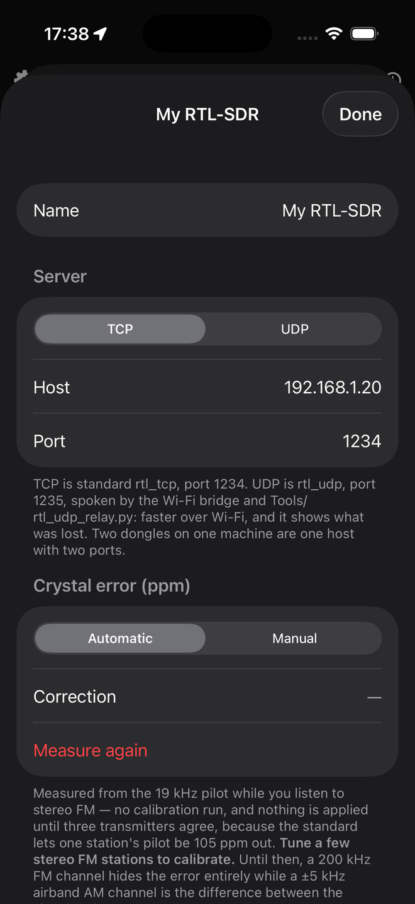

在 App 里连接
电脑上的 rtl_tcp 已经在运行，剩下的就是告诉 App 它在哪里。
开始之前确认两件事：电脑上的 rtl_tcp 窗口显示 listening...；手机和电脑连的是同一个 Wi-Fi。
- 打开设置
进入 Receiver 页面（底部第二个标签），点左上角的齿轮图标。
- 编辑接收机
设置页最上面一行是 Receiver，右边是当前接收机的名字。点它，在弹出的菜单里选 Edit…。

设置页顶部。下面一行小字是当前的地址、端口和连接方式。 - 填写地址
项目 填什么 Name 随便起个名字，方便自己认，比如“书房的 RTL-SDR”。 TCP / UDP 选 TCP。普通的 rtl_tcp都是 TCP。Host 电脑的地址，就是安装那一步查到的，例如 192.168.1.20。树莓派也可以填raspberrypi.local这样的名字。Port 1234，除非你启动 rtl_tcp 时用-p改过。
接收机的编辑页。填完点右上角 Done。 - 点播放
回到页面，点频率左边的播放按钮。几秒钟内瀑布图开始滚动，就连上了。最容易验证的是先去 Radio 页面搜一下 FM 广播，见 Radio 收音机。
连上了但没有任何信号？最常见的原因是 rtl_tcp 同一时间只能服务一个客户端：如果电脑上还开着别的 SDR 软件连着它，或者另一台手机正连着，后来的会连上却收不到数据。其它情况见 连不上怎么办。
频率校准（Crystal error）
便宜的接收机里的晶振有误差，调到 100.000 MHz 时实际可能偏了十几千赫。听 FM 广播感觉不出来，但收航空通话、APRS、AIS 这些窄信号时，偏这么多就完全收不到了。App 会帮你量出这个误差并自动修正。
| 模式 | 怎么用 |
|---|---|
| Automatic（推荐） | 什么都不用设。在 Radio 页面多听几个立体声 FM 电台，每个听几秒，App 会从电台的导频信号里量出误差，三个电台结果一致后自动应用。 |
| Manual | 如果你已经知道这只接收机的误差（单位 ppm），直接填。 |
- RTL-SDR Blog V3 / V4 / V4L 用的是高精度晶振，误差通常在 1–2 ppm 以内，保持默认就可以。
- 普通电视棒的误差可能有几十到一百多 ppm，一定要校准一次。
- 换了一只接收机之后，点 Measure again 重新测量。每只接收机的误差都不一样。
- 校准值在下一次连接时生效：改完之后停止再重新播放。
有多只接收机
设置页的 Receiver 菜单里可以 Add receiver… 再加一项。每个页面（Radio / Receiver / ATC 算一组，Aviation、APRS、AIS、ADS-B 各自一个）都可以在自己的设置里选用哪一只：
- 选了同一只接收机的页面轮流使用：启动一个，另一个会自动停下。
- 选了不同接收机的页面可以同时运行，例如一边听航空通话，一边在 ADS-B 页面看飞机。
修改某一项的地址，所有选用它的页面会一起改变。